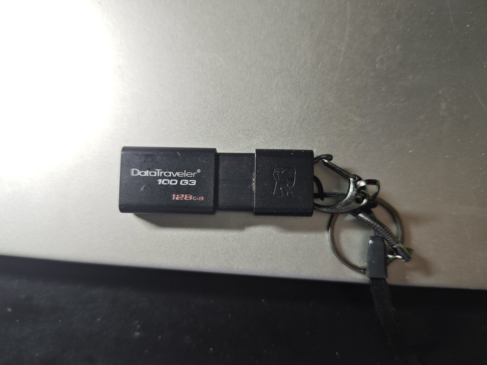

大狐帝国史官邹智萱（笔名段歌文）
@Rococo90933671
以前读书的时候，为了存歌、存单机游戏什么的，买过不少U盘、SD卡。
实体商店的水货先按下不表，就说网上的，我发现，只要是价格比容量GB数明显小的，就十有八九是水盘。
水盘往往容量显示有那么多，但是用不了多久，就会显示什么“读写格式化”，传进去的东西就没了，搞不出来了，要是没有备份数据都救不回来。
遭受的教训不止一次，都是因为贪便宜。唯独在六年前买的一个，跟GB数差不多价格的128G金士顿才是到现在都还能用，并且也没有其他问题的
